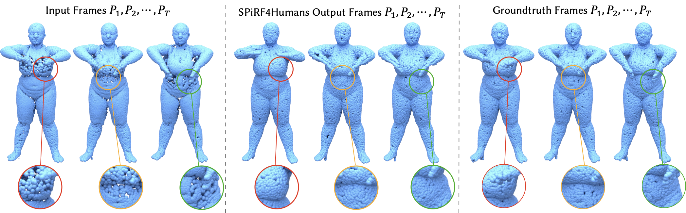
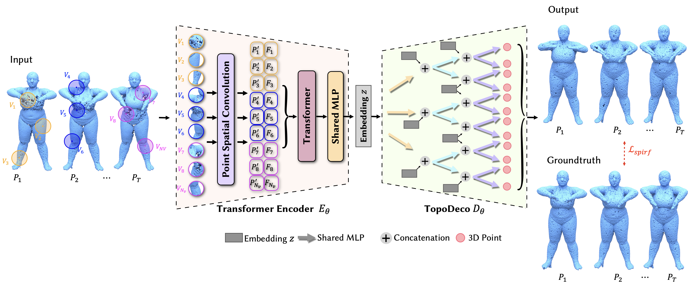
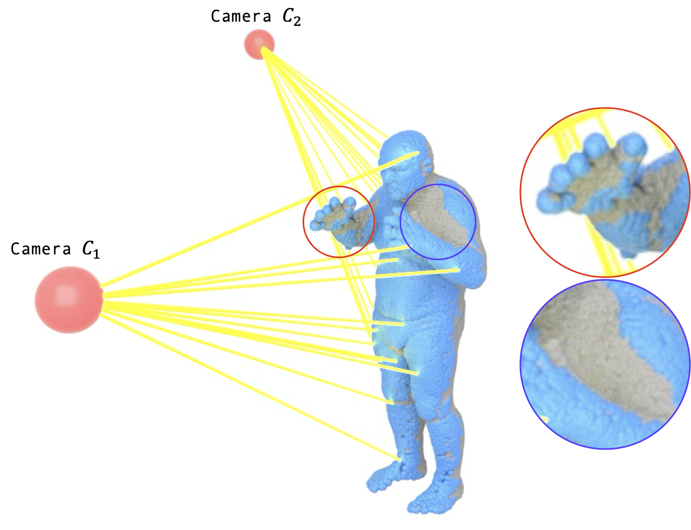
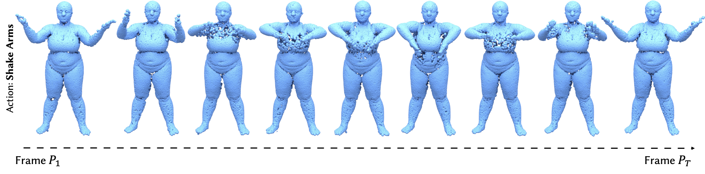

SPiRF4Humans is a novel deep learning framework for the refinement of 4D human point cloud sequences. High-fidelity 4D point clouds, acquired from volumetric capture systems, frequently suffer from massive holes and noise caused by self-occlusions, sensor limitations, and complex, time-varying topologies. Our framework addresses these challenges by leveraging the inherent spatio-temporal coherence in human motion data.

Teaser comparison of input, reconstructed, and ground truth 4D human point clouds. Left: Incomplete, sparse input with severe occlusion-induced holes (2,048 pts). Middle: Our proposed SPiRF4Humans output (16,384 pts) showing stable and smooth hole filling. Right: Complete ground truth (16,384 pts). The insets highlight our performance on complex joint structures.
Core Contributions
-
SPiRF4Humans, a spatio-temporal point cloud hole-filling framework towards 4D data refinement. We propose:
- a transformer-based encoder to capture space-time varying features in 4D data.
- a topology-based decoder for understanding the intricate manifold topologies in 4D data and make consistent 4D predictions.
- a perceptual loss inspired by Dynamic Graph Convolutional Neural Network (DGCNN) to supervise the refinement process by penalizing structural discrepancies in a high-dimensional feature space.
- We create a 4D Human dataset with physically-grounded occlusion synthesis via ray-casting. We utilize the Dynamic FAUST Dataset to create realistic occlusions in 4D capture.
- We demonstrate the efficiency of the proposed SPiRF4Humans on hole-filling in 4D human point cloud data. We also compare our proposed method with state-of-the-art methods both qualitatively and quantitatively.
Network Architecture

SPiRF4Humans Architecture. Our complete model workflow, featuring a Spatio-Temporal Transformer Encoder that models cross-frame dynamics alongside a topology-aware hierarchical decoder to refine and reconstruct highly detailed human manifolds.
Ray-Casting Hole Creation Process
To train models capable of handling real-world sensor limitations, we simulate dynamic self-occlusion. We implement a physically-grounded ray-casting occlusion engine that shoots virtual rays from camera positions, carving out realistic, sequence-consistent occlusion holes.

Ray-Casting Based Hole Creation Process. Occlusions are dynamically calculated using ray-sensor intersections to generate realistic, sequence-consistent voids on the 4D manifold.
Dataset Samples (Shake Arms Action)
Below are dataset samples illustrating how simulated dynamic self-occlusion varies across frames for a dynamic human action like the Shake Arms sequence, showing the generated occlusion patterns and visibility bounds.

Dataset Generation Samples (Shake Arms). Simulated dynamic occlusion patterns and visibility bounds mapped sequentially across the action timeline.
💡 Asymmetric Sampling Strategy & Coordinate Misalignment
A key breakthrough in our data pipeline is the Asymmetric Sampling Strategy. Complete Ground Truth (GT) scans are sampled using Farthest Point Sampling (FPS) to ensure maximum boundary coverage. However, the partial input is sampled randomly to preserve the "void signal" of the occlusion.
Crucially, to prevent Coordinate Misalignment, all spatial normalizations (centering and unit-sphere scaling) are calculated using the complete GT sequence, and then identically applied to the partial inputs. Center-shifting the partial cloud independently based on its own centroid would translate it physically in 3D space due to the missing mass (e.g., a missing leg), causing the neural network to fail to align the coordinate structures.
Qualitative Sequence Comparisons
Below are qualitative frame sequences showing SPiRF4Humans evaluated against state-of-the-art baselines like PCN and SPiKE on complex dynamic movements.

Qualitative comparison on the high-speed "Punching" action sequence. Our framework maintains sharp joint boundaries and fills large temporal occlusions along the arms and back with high-fidelity surface details.
Quantitative Benchmarks
We benchmark our model against state-of-the-art architectures using Chamfer Distance (CD) and Earth Mover's Distance (EMD). Lower is better. Our model reduces the average Chamfer Distance error by 83.2% compared to PCN and 81.0% compared to SPiKE.
| Action Sequence | PCN (CD $\downarrow$) | PCN (EMD $\downarrow$) | SPiKE (CD $\downarrow$) | SPiKE (EMD $\downarrow$) | Ours (CD $\downarrow$) | Ours (EMD $\downarrow$) | Ours ($L_{spirf} \downarrow$) |
|---|---|---|---|---|---|---|---|
| Chicken Wings | 8.6802 | 4.0281 | 7.5210 | 3.8102 | 1.0929 | 0.0242 | 0.000144 |
| Hips | 7.8520 | 4.1101 | 6.9123 | 3.9021 | 0.4421 | 0.0210 | 0.000140 |
| Jiggle On Toes | 5.9127 | 3.2982 | 5.1021 | 3.0124 | 1.0990 | 0.0305 | 0.000208 |
| Jumping Jacks | 4.3210 | 2.9202 | 3.8921 | 2.5012 | 0.7099 | 0.0288 | 0.000297 |
| Knees | 2.8320 | 1.0211 | 2.1023 | 0.9102 | 0.3010 | 0.0156 | 0.000147 |
| Light Hopping | 8.4022 | 4.3025 | 7.6102 | 4.1023 | 1.4273 | 0.0311 | 0.000137 |
| One Leg Jump | 6.4867 | 2.3900 | 5.9012 | 2.1023 | 1.1607 | 0.0225 | 0.000156 |
| One Leg Loose | 7.7609 | 4.9022 | 6.8123 | 4.5012 | 2.1789 | 0.0345 | 0.000165 |
| Punching | 9.3630 | 5.8492 | 8.4102 | 5.2012 | 1.2134 | 0.0412 | 0.000174 |
| Running On Spot | 1.2865 | 0.2920 | 1.1023 | 0.2501 | 2.2357 | 0.0102 | 0.000228 |
| Shake Arms | 9.1625 | 5.3910 | 8.2102 | 5.0123 | 1.2905 | 0.0389 | 0.000153 |
| Shake Hips | 7.9229 | 4.3902 | 7.1023 | 4.0123 | 0.8332 | 0.0322 | 0.000131 |
| Shake Shoulders | 8.5087 | 5.2933 | 7.7123 | 4.9021 | 0.9317 | 0.0367 | 0.000146 |
| Average | 6.8380 | 3.7067 | 6.0321 | 3.3331 | 1.1474 Best | 0.0282 Best | 0.000171 |